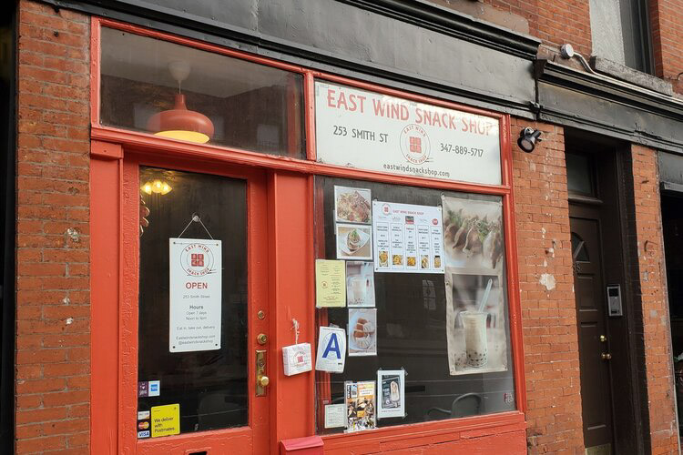
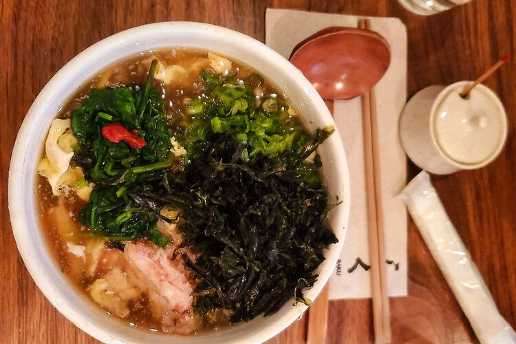
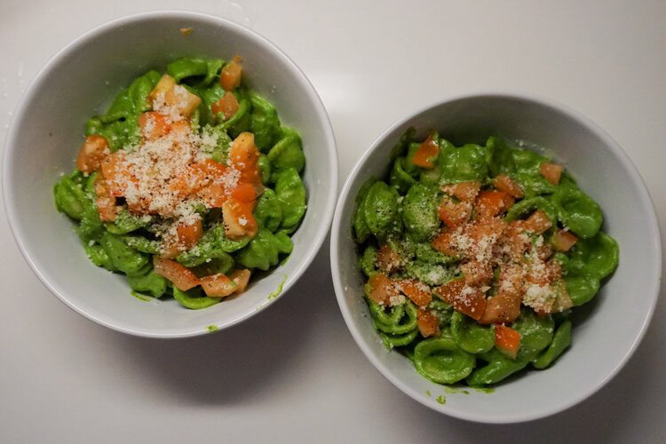

Food | 11/8/20
We’ve been Manhattan lovers for a while now, but one day back at our apartment we thought, why not wander a little into the great unknown that is called Brooklyn?

Food | 11/1/20
As if New York City wasn’t a vast jungle already, you’d be surprised to know that the plentiful number of Japanese restaurants in the city means that you can eat something different every day.

Food | 10/22/20
With all the quarantine cooking taking over the web, we thought you all might also want to try your hand at a healthy -- but delicious-- meal.